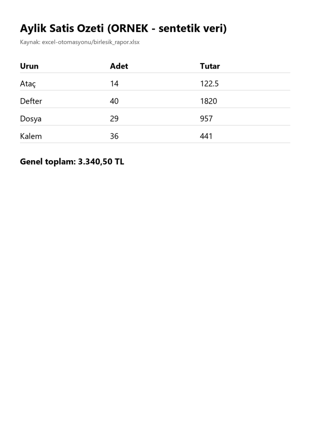

Excel/CSV verisinden düzenli, aynı biçimde PDF rapor üretimi.
Aynı birleşik rapordan üretilmiş tek sayfalık PDF özeti (sentetik veri). Bu örnek görüntü tabanlıdır; metin seçilebilir PDF gerekiyorsa teklifte belirtin.

Tek, basit bir dosya için tahmini başlangıç: 350 TL, Teslim süresi genelde 2 iş günü. Dosya sayısı, satır sayısı ve karmaşıklığa göre değişir; işe başlamadan önce yazılı teklif verilir, onayınız olmadan çalışma başlamaz.
Bu sayfada referans, yorum veya tamamlanmış müşteri işi iddiası yoktur; henüz teslim edilmiş ücretli iş bulunmuyor. Fiyat iş kapsamına göre, işe başlamadan önce yazılı olarak netleştirilir.